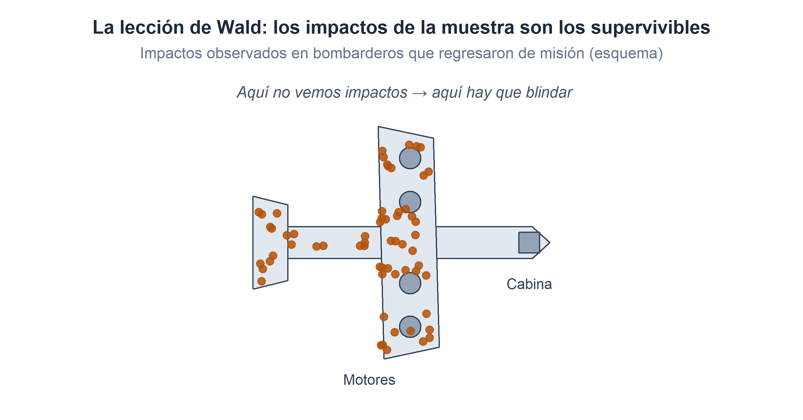
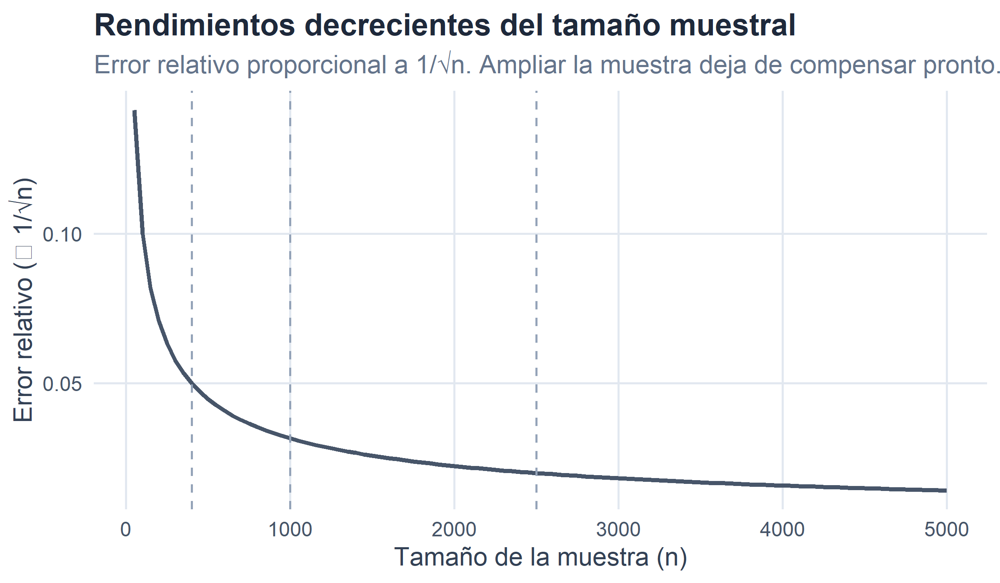
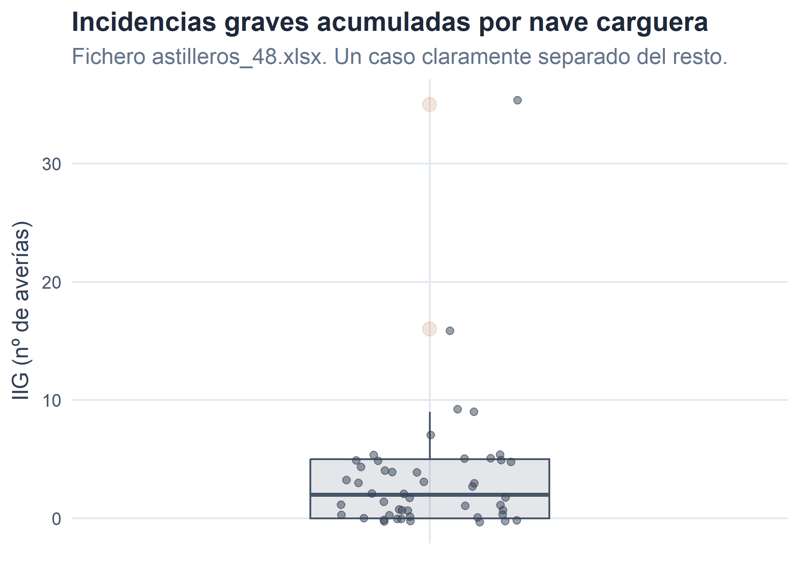

2 Los datos.
Figura 2.1. Sin datos, la Estadística se queda sin materia prima.
En el capítulo anterior hemos delimitado los grandes conceptos de la Estadística: población, individuo, muestra, variable y atributo. Todos ellos se refieren, de una forma u otra, a datos. Sin embargo, hemos dado por hecho que esos datos “están ahí”, listos para ser resumidos y representados. En la realidad, obtener un buen conjunto de datos suele consumir bastante más tiempo (y bastante más presupuesto) que su análisis posterior. Un mal fichero de partida contamina toda la cadena analítica, y ningún ajuste posterior salva un análisis construido sobre información sucia, incompleta o mal recogida.
Este capítulo se dedica precisamente a la fase previa del análisis estadístico: qué son los datos, de dónde vienen, cómo se obtienen, cómo se organizan y qué depuración mínima requieren antes de que empecemos a calcular medias, varianzas o correlaciones. Se trata de contenidos que los manuales tradicionales de Estadística suelen dar por conocidos y que, en la práctica profesional, son lo primero que un economista o un directivo aprende (por las malas) cuando llega a un puesto de trabajo.
2.1 ¿Qué es un dato?
Un dato es el resultado numérico o categórico de medir una característica sobre un caso concreto. Cuando anotamos que la nave Iron Sovereign transporta 840,4 miles de toneladas, o que Luke Diomedea trabaja en el departamento de Almacén, estamos registrando un dato. Formalmente:
Un dato es el valor que toma una variable o atributo para un individuo determinado.
Un dato aislado, por sí solo, no dice gran cosa. La información estadística surge cuando agrupamos muchos datos —los correspondientes a una característica medida sobre todos los individuos de una muestra o de una población— y los organizamos en una estructura que permita su tratamiento sistemático. Esa estructura es lo que llamamos un conjunto de datos o dataset.
Un conjunto de datos, en su forma canónica, es una tabla en la que las filas son los individuos y las columnas son las características medidas. Es la disposición que ya vimos en el capítulo 1 con la plantilla de Hyperdrive Express, y es también la disposición estándar de cualquier hoja de cálculo, base de datos relacional o data frame en R.
| NOMBRE | SALARIO | NESTUDIOS | DEP |
|---|---|---|---|
| Luke Diomedea | 8 | Básicos | Almacén |
| Han Bubo | 8 | Medios | Almacén |
| Anakin Falco | 9 | Básicos | Almacén |
| Spock Phoenicopterus | 9 | Básicos | Almacén |
| James Larus | 9 | Medios | Gestión Interna |
Tabla 2.1. Primeras filas del fichero trabajadores.xlsx: cada fila es un individuo (empleado), cada columna una característica.
Detrás de esa tabla aparentemente inocente hay una larga serie de decisiones metodológicas: quién definió esas cuatro variables, cómo las midió, cuándo, con qué instrumentos, con qué grado de fiabilidad y con qué depuración las publicó. El resto del capítulo se ocupa, precisamente, de esa cocina que casi nunca se ve.
2.2 Fuentes de datos.
La primera pregunta antes de emprender cualquier análisis es sencilla: ¿de dónde salen los datos? La respuesta habitual admite dos grandes familias.
2.2.1 Fuentes primarias.
Las fuentes primarias son aquellas en las que el propio investigador o analista construye los datos, midiéndolos directamente sobre los individuos de interés. El caso genera el dato, y el dato llega al análisis sin intermediarios. Los canales más habituales son:
- Mediciones directas con instrumentos: sensores de temperatura en una cadena de producción, contadores de tráfico en un aeropuerto, lectores de códigos de barras en un supermercado. En el universo R-Stars serían los sensores de consumo de especia y el registro automático de tonelaje que la nave Iron Sovereign transmite en cada salto de hipervelocidad.
- Registros administrativos internos de la organización: nóminas, facturas, órdenes de compra, registros de RRHH, tickets de atención al cliente. Un fichero típico de front-office.
- Encuestas diseñadas ad hoc para responder a una pregunta concreta (satisfacción del cliente, intención de compra, clima laboral). Constituyen la vía primaria por excelencia en Ciencias Sociales y en marketing.
- Experimentos controlados: pruebas A/B en una web de comercio electrónico, ensayos de campo, prototipos.
Su gran ventaja es el control: quien construye el dato decide qué medir, cómo hacerlo, con qué escala y con qué grado de precisión. Su inconveniente es el coste: recoger datos primarios en cantidad y con calidad suficientes es lento y caro. Una encuesta representativa de un país mediano puede costar decenas de miles de PAVOs y varios meses de trabajo.
2.2.2 Fuentes secundarias.
Las fuentes secundarias publican datos ya recogidos por otros. El analista no interviene en la medición: utiliza información ya construida y, en muchos casos, ya depurada. Las más relevantes para un economista son:
- Institutos oficiales de Estadística: el INE en España, Eurostat en la Unión Europea, el U.S. Bureau of the Census, la OCDE, el Banco Mundial, el FMI, la OMS, la FAO… Publican series económicas, demográficas y sociales con altísima calidad metodológica y bajo estándares comparables.
- Bancos centrales y supervisores financieros: Banco Central Europeo, Reserva Federal, Banco de España, CNMV. Series monetarias, financieras, contables agregadas y microdatos financieros.
- Registros administrativos públicos: registros mercantiles, cámaras de comercio, patentes, licencias.
- Bases privadas de pago: Bloomberg, Refinitiv, S&P Capital IQ, SABI, Orbis. Ofrecen microdatos empresariales de calidad, generalmente con acceso restringido por suscripción.
-
Datos abiertos (open data): portales gubernamentales, académicos o corporativos que publican datos gratuitos y reutilizables (por ejemplo,
datos.gob.es,data.europa.eu).
Su gran ventaja es el coste marginal casi nulo y la calidad certificada (al menos cuando la fuente es de prestigio). Su inconveniente, la falta de flexibilidad: quien publica decide qué variables, con qué desagregación, con qué unidades y con qué periodicidad, y el analista se conforma con lo que hay.
Ejemplo. Para un estudio sobre el sector del transporte interestelar podríamos usar (i) el fichero interno de la compañía Hyperdrive Express con las fichas de sus empleados —fuente primaria—, y (ii) el fichero público
interestelar_300.xlsx, con datos económico-financieros de las 300 principales compañías galácticas del sector —fuente secundaria—. Combinar las dos vías es lo habitual.
| Aspecto | Fuentes primarias | Fuentes secundarias |
|---|---|---|
| Origen del dato | Recogido por el propio analista | Publicado por un tercero |
| Coste | Alto (tiempo, personal, dinero) | Bajo o nulo |
| Control metodológico | Total: se define qué medir y cómo | Nulo: se acepta lo publicado |
| Rapidez | Lenta: hay que diseñar y ejecutar | Inmediata: solo hay que descargar |
| Ajuste al problema | Máximo | Variable, a veces limitado |
| Actualización | La marca el analista | La marca la fuente |
Tabla 2.2. Fuentes primarias frente a fuentes secundarias: ventajas e inconvenientes.
2.3 Sistemas de obtención de datos.
Localizada la fuente, viene la pregunta técnica: ¿cómo llegan los datos hasta el analista? Los canales han cambiado radicalmente en la última década. Un directivo de hace veinte años recibía la información en informes impresos; hoy la esperamos en fichero, actualizada al minuto y accesible en una línea de código. Repasamos las cuatro vías más habituales, en orden creciente de sofisticación.
2.3.1 Descarga directa de ficheros.
Es el mecanismo más sencillo: la fuente publica un fichero (normalmente en su web) y el usuario lo descarga con el navegador. El fichero suele estar en uno de los formatos que veremos en 2.3.5, y una vez guardado se abre con la herramienta correspondiente (Excel, R, Python, un SGBD, etc.).
Es la vía típica para conjuntos pequeños o medianos, con actualización poco frecuente (mensual, trimestral, anual) y para usuarios finales sin perfil técnico. El INE publica así la mayoría de sus tablas. Ventaja: no requiere ninguna infraestructura; inconveniente: si la publicación se actualiza cada mes, el analista tiene que acordarse de descargar el nuevo fichero cada mes.
2.3.2 Acceso mediante API.
Una API (Application Programming Interface) es, dicho de manera intuitiva, un enchufe informático que la fuente pone a disposición del usuario para que un programa —no una persona— pueda pedirle datos de forma automática y estructurada. Se pide con una URL especial que incluye los parámetros de la consulta y se recibe un fichero (habitualmente en JSON) con la respuesta.
Un ejemplo simplificado, con la sintaxis que usaríamos en R:
# Ejemplo pedagógico: consulta a una API hipotética del INE Galáctico
# para obtener el PIB de la Galaxia de Andrómeda.
library(httr2)
library(jsonlite)
url <- "https://api.ine-galactico.gal/series/PIB"
respuesta <- request(url) |>
req_url_query(galaxia = "andromeda", anho = 2185) |>
req_perform()
datos <- respuesta |> resp_body_json()Las ventajas de este mecanismo son enormes:
- Automatización: el mismo script que se ejecutó hoy puede ejecutarse mañana con datos actualizados sin intervención humana.
- Filtrado en origen: se piden solo las variables, categorías, países o fechas que interesan. Ahorra ancho de banda y tiempo de procesado.
- Trazabilidad: la URL queda registrada. Otro analista puede reproducir la descarga exacta.
Sus inconvenientes: exige una mínima soltura en programación, algunas APIs requieren autenticación (clave o token) y muchas imponen un límite de peticiones por minuto o por día. Casi todas las fuentes secundarias de prestigio ofrecen hoy acceso vía API: Eurostat, Banco Mundial, ECB, FRED, Yahoo Finance, ONU…
2.3.3 Web scraping.
Cuando la información está publicada en una página web pero no hay ni descarga directa ni API, queda el recurso del web scraping: escribir un programa que “lea” la página como lo haría un humano y extraiga los datos de interés. Es una técnica potente pero delicada:
- Legalmente hay que respetar los términos de uso del sitio, las condiciones de acceso y, en muchos casos, la normativa sobre propiedad intelectual y protección de datos.
- Técnicamente es frágil: cualquier rediseño de la página rompe el scraper y obliga a reescribirlo.
Es la vía típica para conjuntos que no publican los datos de forma estructurada (precios de productos en una tienda online, ofertas de empleo, opiniones de clientes, etc.). Debe usarse como última opción, no como primera.
2.3.4 Conexión directa a bases de datos.
Cuando la fuente es la base de datos de la propia organización (o de un cliente), el acceso suele hacerse mediante una conexión directa desde el software analítico al SGBD (Sistema de Gestión de Bases de Datos: Oracle, PostgreSQL, MySQL, SQL Server, MongoDB…). El analista escribe una consulta en el lenguaje del SGBD —normalmente SQL— y recibe el resultado como una tabla.
# Ejemplo pedagógico: consulta SQL sobre la base de datos interna
# de Hyperdrive Express para obtener el salario medio por departamento.
library(DBI)
con <- dbConnect(RPostgres::Postgres(),
host = "db.hyperdrive-express.gal",
dbname = "rrhh",
user = "analista",
password = Sys.getenv("HYP_PWD")) # nunca en el script
consulta <- "
SELECT departamento, AVG(salario) AS salario_medio, COUNT(*) AS n
FROM empleados
GROUP BY departamento
ORDER BY salario_medio DESC;
"
resumen <- dbGetQuery(con, consulta)
dbDisconnect(con)Es el mecanismo dominante en entornos empresariales. Su punto fuerte es la eficiencia: el filtrado, la agregación y la selección de columnas se ejecutan en la propia base de datos, y solo viaja al ordenador del analista el resultado final. Cuando se trabaja con millones de filas, la diferencia respecto a descargar el fichero completo es abismal.
2.3.5 Formatos de datos habituales.
Sea cual sea el canal de obtención, los datos acaban materializándose en un fichero con un formato concreto. Conocer las diferencias entre los formatos más habituales evita muchos disgustos.
| Formato | Extensión | Tipo | Uso típico |
|---|---|---|---|
| CSV | .csv | Texto plano | Intercambio universal de tablas: la lingua franca de los datos. |
| TSV | .tsv | Texto plano | Variante del CSV que usa tabuladores como separador. |
| Excel | .xlsx | Binario | Ficheros con varias hojas, fórmulas y formato. Cómodo para el usuario final. |
| JSON | .json | Texto | Formato de respuesta habitual de las APIs. Admite estructuras anidadas. |
| XML | .xml | Texto | Similar al JSON, más pesado. Común en administraciones públicas. |
| Parquet | .parquet | Binario columnar | Big Data. Muy eficiente en almacenamiento y lectura selectiva de columnas. |
| RDS/RData | .rds | Binario R | Serialización nativa de R. Ideal para guardar objetos ya procesados. |
| SQL dump | .sql | Texto | Volcado de una base de datos completa (estructura + datos). |
Tabla 2.3. Formatos habituales de intercambio de datos.
Vale la pena detenerse en los dos formatos más habituales para el trabajo diario.
El CSV (Comma-Separated Values) es un fichero de texto plano en el que cada fila del conjunto de datos ocupa una línea y las columnas se separan por un carácter delimitador —normalmente la coma, aunque en países que usan la coma decimal se sustituye por el punto y coma—. Su gran virtud es la portabilidad: cualquier programa capaz de leer texto puede abrirlo. Sus problemas clásicos: la codificación (¿UTF-8?, ¿Latin-1?), el separador (¿coma?, ¿punto y coma?, ¿tabulador?) y la marca decimal (¿punto?, ¿coma?).
# CSV internacional: coma como separador y punto decimal.
# read.csv espera exactamente este formato.
carga <- read.csv("cargamentos_2185.csv")
# CSV "español": punto y coma como separador y coma decimal.
# read.csv2 espera exactamente ESE otro formato.
carga <- read.csv2("cargamentos_2185.csv")El Excel (.xlsx) es un formato binario propietario pero universalmente aceptado. Permite varias hojas por libro, fórmulas, formato condicional y comentarios. Los tres ficheros del universo R-Stars que acompañan al libro —trabajadores.xlsx, interestelar_300.xlsx y astilleros_48.xlsx— están precisamente en este formato, con la estructura habitual de “hoja de presentación + hoja de descripción de variables + hoja de datos”.
library(readxl)
interestelar <- read_excel("interestelar_300.xlsx", sheet = "Datos")
variables <- read_excel("interestelar_300.xlsx", sheet = "Variables")2.4 Encuestas: la importancia del muestreo.
De todas las vías de obtención de datos primarios, la encuesta merece una sección propia. Es el mecanismo por el que se recogen, en Ciencias Sociales y en Economía, la práctica totalidad de los datos que no proceden de un registro administrativo o de un sensor. Buena parte de los estudios de mercado, la investigación electoral y la estadística oficial descansan en ella.
Una encuesta bien hecha permite obtener conclusiones válidas sobre millones de personas entrevistando a unos pocos miles. Una mal hecha, en cambio, produce cifras que suenan a precisas pero que no describen a nadie en particular. La diferencia entre ambas se juega en tres frentes: el muestreo, el diseño del cuestionario y el método de encuestación.
2.4.1 Por qué el muestreo es crítico.
La lógica del muestreo es intuitiva: si la muestra reproduce, a pequeña escala, la estructura de la población, las conclusiones obtenidas en la muestra podrán extenderse —con la incertidumbre asociada— a la población completa. Si la muestra no es representativa, cualquier conclusión será estructuralmente sesgada, por muy sofisticado que sea el análisis posterior.
Dos ejemplos clásicos, cada uno con un tipo distinto de sesgo, ilustran el punto mejor que cualquier definición formal.
El primero: Literary Digest vs. Gallup, 1936. En la campaña presidencial norteamericana de aquel año, la revista Literary Digest envió más de diez millones de encuestas a suscriptores, propietarios de teléfono y matriculados en asociaciones de automovilistas. Con 2,4 millones de respuestas pronosticó una victoria arrolladora del candidato republicano Landon frente a Roosevelt. En paralelo, un joven estadístico llamado George Gallup entrevistó a 50 000 personas seleccionadas cuidadosamente para reproducir la estructura de la población y pronosticó la victoria de Roosevelt. Ganó Roosevelt. La muestra del Literary Digest, pese a ser 48 veces más grande, estaba sesgada hacia las clases altas —los únicos que en plena Depresión tenían teléfono y coche—, y el tamaño no compensó el sesgo.
El segundo: los bombarderos de Wald, 1943. Apenas siete años después, en plena Segunda Guerra Mundial, el Statistical Research Group de la marina estadounidense estudiaba los bombarderos que regresaban de misiones sobre Europa. La distribución de impactos de bala y metralla se repetía con notable regularidad: mucho daño en alas, fuselaje central y estabilizadores de cola; muy pocos impactos en motores y cabina. La conclusión aparente era inmediata: blindar más las zonas más castigadas. Y así iba a hacerse cuando Abraham Wald, un matemático húngaro refugiado de la persecución nazi, señaló lo contrario. La muestra que estaban examinando era la de los aviones que volvían. Los que recibían impactos en motor o cabina no regresaban: caían en territorio enemigo. Los que se veían en el hangar eran los supervivientes, y los agujeros que exhibían mostraban precisamente dónde un bombardero podía recibir impactos y aun así aterrizar. El blindaje adicional había que ponerlo donde no había agujeros: en motor y cabina.

Figura 2.2
Wald tenía razón. Su análisis salvó vidas y aviones, y el caso es hoy el ejemplo canónico del sesgo de supervivencia (survivorship bias): cuando la muestra que se examina está condicionada por haber “sobrevivido” a un proceso previo, sus características describen a los supervivientes, no a la población completa. En Economía y gestión aparece de mil formas: se estudia la rentabilidad de los fondos de inversión olvidando los que quebraron; se admira la estrategia de las empresas exitosas ignorando a las que aplicaron la misma estrategia y desaparecieron; se pregunta a los millonarios cómo se hicieron ricos y nadie interroga a quienes intentaron lo mismo y hoy siguen pobres. Con la muestra sesgada, cualquier conclusión será equivocada, por sofisticada que sea la aritmética que la acompañe.
Las dos moralejas de estos dos casos —una tiene más de noventa años, la otra más de ochenta— siguen vigentes:
Una muestra pequeña bien diseñada vale más que una muestra enorme mal diseñada.
Antes de creerse un dato, hay que preguntarse por los datos que no están.
2.4.2 Tipos de muestreo.
Los procedimientos de selección de la muestra se agrupan en dos grandes familias.
2.4.2.1 Muestreos probabilísticos.
Todos los individuos de la población tienen una probabilidad conocida y positiva de ser seleccionados. Solo estos permiten aplicar rigurosamente las herramientas de inferencia estadística que veremos en el Bloque III.
Aleatorio simple. Cada individuo tiene la misma probabilidad de entrar en la muestra. Es el método más sencillo y sirve como referencia teórica, pero en la práctica requiere disponer de un marco muestral —una lista completa y actualizada de todos los individuos—, cosa que rara vez existe fuera del laboratorio.
Sistemático. Se ordena la población y se selecciona un individuo cada \(k\) posiciones, tras elegir aleatoriamente el arranque. Equivale a un aleatorio simple si la ordenación no está correlacionada con la variable de interés, y es más cómodo de aplicar.
Estratificado. La población se divide en estratos homogéneos (por edad, sector, tamaño de empresa, galaxia de origen…) y dentro de cada estrato se hace un muestreo aleatorio. Garantiza que la estructura de la muestra reproduce la de la población respecto a las variables usadas para estratificar. Es el método más habitual en encuestas oficiales.
Por conglomerados. Se seleccionan grupos completos (barrios, empresas, colegios) y se entrevista a todos sus miembros. Se emplea cuando el marco muestral individual no existe pero sí el de conglomerados. Es más barato de aplicar sobre el terreno, aunque suele exigir muestras algo mayores.
Polietápico. Combinación de los anteriores. La Encuesta de Población Activa del INE, por ejemplo, es un muestreo estratificado por comunidades autónomas y, dentro de cada una, por conglomerados de secciones censales.
2.4.2.2 Muestreos no probabilísticos.
La selección no se basa en un mecanismo aleatorio y las probabilidades de inclusión son desconocidas. No permiten inferencia rigurosa, pero se usan mucho en la práctica por su bajo coste.
Por cuotas. El entrevistador elige a los individuos que va encontrando hasta completar unas cuotas predeterminadas (por ejemplo, “20 mujeres jóvenes universitarias”). Frecuente en estudios de mercado.
De conveniencia. Se entrevista a quien está a mano. Barato, rápido y muy sesgado. Sirve para pruebas piloto, no para publicar cifras.
Bola de nieve. Cada entrevistado sugiere al siguiente. Útil para poblaciones difíciles de localizar (colectivos minoritarios, expertos en un tema), inservible como muestra representativa.
Autoselección. Cualquier encuesta abierta en la que responde quien quiere: encuestas de portada en periódicos digitales, sondeos en redes sociales. El grupo Literary Digest fue una forma sofisticada de esto.
| Tipo | Familia | Cuándo usarlo | Riesgo principal |
|---|---|---|---|
| Aleatorio simple | Probabilístico | Referencia teórica; poblaciones pequeñas y accesibles | Requiere marco muestral completo |
| Sistemático | Probabilístico | Poblaciones ordenadas de forma no periódica | Sesgo si la ordenación se correlaciona con la variable |
| Estratificado | Probabilístico | Población con subgrupos heterogéneos claramente definidos | Mala definición de estratos |
| Por conglomerados | Probabilístico | No hay marco individual pero sí de grupos | Menor precisión por conglomerado |
| Polietápico | Probabilístico | Grandes encuestas oficiales | Complejidad de diseño y ponderación |
| Por cuotas | No probabilístico | Estudios de mercado rápidos | Selección sesgada dentro de cada cuota |
| De conveniencia | No probabilístico | Pruebas piloto | Sesgo total; no generalizable |
| Bola de nieve | No probabilístico | Poblaciones ocultas o de difícil acceso | Sobre-representación de círculos cercanos |
| Autoselección | No probabilístico | Nunca, si el objetivo es representar | Sesgo de motivación del respondiente |
Tabla 2.4. Principales tipos de muestreo, familia a la que pertenecen y uso recomendado.
2.4.3 Tamaño muestral.
La segunda gran pregunta es cuántos individuos hay que entrevistar. La respuesta, formalizada, requiere las herramientas de inferencia que aún no hemos visto (nivel de confianza, error admisible, dispersión de la variable), y la retomaremos en el Bloque III. Por ahora basta con dejar dos ideas intuitivas:
- Cuanta más precisión se quiera, mayor debe ser la muestra. Para pasar de un margen de error del \(\pm 3\%\) al \(\pm 1\%\) hay que multiplicar el tamaño de la muestra aproximadamente por nueve. La precisión se paga muy cara.
- A partir de cierto punto, ampliar la muestra deja de compensar. Duplicar una muestra de 1 000 individuos no divide el error entre dos, sino entre \(\sqrt{2}\). Y ampliar una muestra sesgada no arregla el sesgo: lo hace más preciso.

Figura 2.3
2.4.4 El diseño del cuestionario.
Aunque el muestreo esté impecable, un mal cuestionario arruina la encuesta. La pregunta, aparentemente inocente, es el instrumento de medida, y como todo instrumento admite errores sistemáticos si no se calibra bien.
Un buen cuestionario cumple una lista corta de principios:
- Claridad y univocidad. Cada pregunta debe entenderse de una sola forma y con vocabulario accesible para el respondiente. La pregunta “¿está usted a favor de la desregulación asimétrica del hipercomercio interplanetario?” solo mide una cosa con seguridad: cuántas personas creen entender esa frase.
- Neutralidad. Evitar preguntas con carga emocional, con doble negación o con la respuesta implícita en el enunciado (“¿está usted de acuerdo con la excelente gestión del Consejo Galáctico?”).
- Un asunto por pregunta. “¿Le gustó el trato del capitán y la puntualidad de la nave?” mezcla dos evaluaciones que pueden ir en sentidos opuestos.
- Escalas coherentes. Cuando se pide una valoración numérica, mantener la misma escala (por ejemplo, 1–5 o 0–10) a lo largo de todo el cuestionario. Cambiar de escala en mitad del formulario multiplica los errores.
- Orden razonable. De lo general a lo específico, de lo neutro a lo sensible. Las variables sociodemográficas se preguntan al final: son útiles para la ponderación pero cansan al respondiente si aparecen al principio.
- Extensión moderada. A partir de cierto momento el respondiente responde por cumplir, no por reflexionar. En encuestas online, más de 10 minutos ya es problemático.
2.4.5 Métodos de encuestación.
Con el mismo cuestionario y el mismo muestreo, la forma de administrar la encuesta condiciona la calidad y el coste del trabajo. Los métodos clásicos son cinco:
- PAPI (Paper And Pencil Interview). La entrevista tradicional cara a cara, con cuestionario en papel. Costosa pero muy fiable en poblaciones vulnerables o con baja alfabetización digital.
- CATI (Computer-Assisted Telephone Interview). Entrevista telefónica asistida por ordenador. Rápida y económica; su gran inconveniente hoy es la creciente reticencia de la ciudadanía a atender llamadas de números desconocidos.
- CAPI (Computer-Assisted Personal Interview). Cara a cara, pero con tableta o portátil. Combina la calidad del PAPI con la agilidad del registro digital y una detección temprana de errores.
- CAWI (Computer-Assisted Web Interview). La encuesta online. Coste mínimo, rapidez altísima, alcance internacional y peligros específicos: sesgo de autoselección, cobertura desigual (quien no tiene conexión no responde) y respuestas descuidadas cuando la incentivación es puramente monetaria.
- Encuestas por panel. Grupo estable de individuos que responden repetidamente a lo largo del tiempo. Permite seguir cambios individuales, pero se agota: el panelista aprende, se cansa y su comportamiento deja de ser el de un ciudadano medio.
La tendencia dominante desde 2020 aproximadamente es la encuestación mixta: combinar CAWI para el grueso del trabajo y completar con CATI o CAPI las subpoblaciones que no responden por internet. Es la única manera de conservar precios razonables sin perder representatividad.
2.5 Bases de datos.
Una vez recogidos los datos —por la vía que sea—, necesitan un lugar donde vivir de forma organizada. Una hoja de cálculo puede bastar para veinte filas y tres columnas; en cuanto el volumen crece o varias personas necesitan trabajar simultáneamente sobre la información, el instrumento adecuado es una base de datos.
Una base de datos es un conjunto estructurado de datos, almacenado sistemáticamente para permitir su recuperación, consulta y actualización de forma eficiente y consistente por parte de múltiples usuarios o aplicaciones.
La definición contiene tres palabras clave: estructurado, eficiente y consistente. Estructurado significa que los datos siguen un esquema conocido, no un cajón desastre. Eficiente, que las consultas devuelven resultados en tiempos razonables incluso con millones de filas. Consistente, que dos consultas idénticas realizadas por dos usuarios distintos devuelven, salvo actualizaciones legítimas, el mismo resultado.
2.5.1 Características de una buena base de datos.
Los sistemas de bases de datos profesionales se diseñan buscando cinco propiedades, conocidas por su acrónimo ACID (para las de tipo transaccional):
- Atomicidad: cada operación se ejecuta por completo o no se ejecuta en absoluto. No hay estados intermedios visibles.
- Consistencia: la base pasa de un estado válido a otro estado válido. Las reglas de integridad (claves, restricciones de dominio) se respetan siempre.
- Isolamiento: dos operaciones simultáneas no interfieren entre sí. Cada una ve la base como si estuviera sola.
- Durabilidad: una vez confirmada una operación, sus efectos persisten aunque haya un fallo del sistema.
Por encima de ACID, un buen diseño busca no duplicar información (una modificación en un dato repetido en diez sitios se olvida en nueve), preservar la integridad referencial (si el empleado E027 aparece en la tabla de nóminas, tiene que existir en la tabla maestra de empleados) y documentar cada tabla y cada campo (esto lo abordamos enseguida).
2.5.2 Riesgos del mal diseño.
Los problemas de una base de datos mal diseñada son sorprendentemente predecibles:
- Datos duplicados o inconsistentes: la misma empresa aparece como “Hyperdrive Express” y “HYPERDRIVE EXPRESS SA”, y se cuenta dos veces.
- Codificaciones incompatibles en campos que deberían coincidir: la variable galaxia usa “VÍA LÁCTEA” en una tabla y “Via Lactea” en otra. Los cruces fallan silenciosamente.
- Ausencia de restricciones: nada impide introducir un salario negativo, una fecha imposible o una edad de 300 años.
- Falta de trazabilidad: no se sabe quién modificó qué, ni cuándo. La auditoría es un ejercicio de arqueología.
- Rendimiento inaceptable: consultas que en un diseño correcto tardan segundos, en uno defectuoso tardan horas.
En el ámbito empresarial estos problemas se traducen directamente en decisiones erradas y en incumplimientos normativos. La calidad del dato es un activo estratégico.
2.5.3 Tipos de bases de datos.
Aunque el término abarque tecnologías muy diversas, dos grandes familias dominan hoy el panorama.
2.5.3.1 Bases de datos relacionales.
Son las clásicas. La información se organiza en tablas interrelacionadas mediante claves (primaria en la tabla de origen, foránea en la tabla que la referencia). Se consultan mediante SQL (Structured Query Language), un lenguaje declarativo estandarizado.
Los productos comerciales y libres dominantes son PostgreSQL, MySQL / MariaDB, Oracle Database, Microsoft SQL Server y SQLite (esta última especialmente ligera y usada como base de datos empotrada en aplicaciones móviles y de escritorio).
Su gran fortaleza es la integridad: los datos son coherentes por diseño, y las transacciones cumplen ACID de forma nativa. Es el estándar para sistemas transaccionales —contabilidad, RRHH, ventas, banca— donde un fallo es inaceptable.
2.5.3.2 Bases de datos no relacionales (NoSQL).
Aparecen a principios de la década de 2010, cuando el volumen y la variedad de datos generados por la web superan lo que las bases relacionales pueden manejar cómodamente. Renuncian a parte de la rigidez del modelo relacional (y, a menudo, a alguna de las garantías ACID) a cambio de escalabilidad horizontal y flexibilidad de esquema. Se agrupan en cuatro subfamilias:
- Documentales (MongoDB, CouchDB): guardan documentos JSON individuales.
- Clave-valor (Redis, DynamoDB): tabla hash gigante, muy rápida para lecturas y escrituras simples.
- Columnares (Cassandra, HBase): optimizadas para agregaciones sobre volúmenes enormes.
- De grafos (Neo4j): modelan relaciones complejas entre entidades (redes sociales, fraude, rutas logísticas).
Su nicho natural son los sistemas de Big Data, las plataformas web con millones de usuarios y las aplicaciones analíticas que no requieren garantías transaccionales estrictas.
| Aspecto | Relacional | NoSQL |
|---|---|---|
| Estructura | Tablas con esquema rígido | Esquema flexible; documentos, clave-valor, grafos, columnas |
| Lenguaje | SQL (estándar) | Específico de cada producto |
| Integridad | ACID nativo | Habitualmente BASE (menos estricto) |
| Escalabilidad | Vertical (máquina más potente) | Horizontal (más máquinas) |
| Uso típico | Sistemas transaccionales, contabilidad, ERP | Web a gran escala, Big Data, IoT, analytics |
| Ejemplos | PostgreSQL, Oracle, SQL Server, MySQL | MongoDB, Redis, Cassandra, Neo4j |
Tabla 2.5. Bases de datos relacionales frente a NoSQL: comparación resumida.
2.5.4 Metadatos y diccionario de datos.
Un fichero de datos sin documentación es un misterio arqueológico. La variable IIG del fichero de astilleros, por ejemplo, no significa nada por sí sola: podría ser un identificador, un índice, una frecuencia o una temperatura. Solo la hoja de descripción de variables que acompaña al fichero nos aclara que se trata del Índice de Incidencias Graves, medido en número de averías mayores acumuladas en la vida operativa de la nave.
Ese conjunto de información sobre los datos —el diccionario de datos— es lo que llamamos metadatos (“datos sobre los datos”). Un buen diccionario incluye, para cada variable:
- Nombre técnico (el que aparece como cabecera de columna).
- Descripción literal.
- Unidad de medida (o categorías admisibles, si es un atributo).
- Tipo (numérico, texto, fecha, factor…).
- Rango de valores válidos y regla de codificación de valores perdidos.
- Fuente original del dato.
- Fecha de última actualización.
Los ficheros de este libro siguen esta convención. La hoja Variables de astilleros_48.xlsx, por ejemplo, funciona como diccionario del fichero:
| Variable | Descripción | Unidades |
|---|---|---|
| NOMBRE | Identificación de la nave carguera. | Texto |
| ASTILLERO | Empresa constructora y fabricante de la nave carguera. | Categórico (KORRIGAN, SELENE, ARCTURUS) |
| SEDE | Puerto base de operaciones de la nave. | Texto |
| IRE | Índice de Rendimiento Energético: toneladas de carga transportadas por unidad de especia consumida en la ruta de referencia Sol–Centauri B. | Toneladas / unidad de especia |
| IIG | Índice de Incidencias Graves: número de averías mayores registradas a lo largo de la vida operativa de la nave. | Entero (nº de averías) |
| ANTIGÜEDAD | Años en servicio activo de la nave desde su puesta en operación. | Años |
| TONELAJE | Capacidad máxima de carga útil de la nave. | Miles de toneladas |
Tabla 2.6. Diccionario de datos del fichero astilleros_48.xlsx (hoja Variables).
En proyectos serios, mantener actualizado el diccionario de datos es responsabilidad tan importante como mantener actualizados los datos mismos. La regla que rige el sector es simple: si no está documentado, no existe.
2.6 Tratamiento previo de datos.
Una vez obtenidos y almacenados los datos, aún queda un paso ineludible antes de calcular la primera media: prepararlos. Los datos brutos —vengan de una encuesta, de un sensor o de una base corporativa— raramente están en condiciones de ser analizados sin más. Los problemas recurrentes son tres: valores perdidos, casos atípicos e inconsistencias. Los dos primeros se tratan aquí en detalle; el tercero es más un asunto de sentido común informático (validar dominios, cruzar tablas, comprobar consistencia interna) y lo damos por asumido.
2.6.1 Valores perdidos (missing values).
Un valor perdido es un dato que debería estar en el fichero pero no está. Aparece en cualquier conjunto de datos real, sean encuestas del INE, registros contables de una pyme o balances de una compañía galáctica.
2.6.1.1 Cómo se materializa un valor perdido.
Un mismo valor perdido puede materializarse de varias formas incompatibles entre sí: celda vacía, guion, NA, n.d., 999, 9999999999, un cero… Confundirlos con datos válidos es una de las formas más discretas —y más habituales— de contaminar un análisis: un 999 interpretado como valor válido convierte a un trabajador en el mejor pagado de la galaxia. Lo primero, siempre, es identificar cómo se codifican los huecos en el fichero de partida.
| NOMBRE | SALARIO | NESTUDIOS | DEP |
|---|---|---|---|
| Luke Diomedea | 8 | Básicos | Almacén |
| Han Bubo | 8 | Medios | Almacén |
| Anakin Falco | 9 | n.d. | Almacén |
| Spock Phoenicopterus | 9 | Básicos | Almacén |
| James Larus | 999 | Medios | Gestión Interna |
| Jean-Luc Hirundo | 10 | Medios | Gestión Interna |
| Data Accipiter | 10 | Gestión Interna | |
| Obi-Wan Psittacus | 10 | Medios | Gestión Interna |
| Lando Columba | 10 | Medios | Personal Navegación |
| Poe Corvus | 10 | Medios | Personal Navegación |
Tabla 2.7. Extracto de un fichero recibido de RR.HH.: los huecos se han codificado como cadena vacía, como texto n.d. y como 999. Todos son en realidad valores perdidos.
2.6.1.2 Tipos de valores perdidos.
No todos los valores perdidos son iguales. La literatura estadística distingue tres regímenes, con implicaciones muy distintas para el análisis:
- MCAR (Missing Completely At Random): el dato falta por puro azar, sin relación con nada. Un trabajador cualquiera no aparece porque su ficha se traspapeló. Es el caso más benigno: cualquier técnica razonable da resultados válidos.
- MAR (Missing At Random): la probabilidad de que falte el dato depende de otras variables observadas, pero no del valor faltante en sí. Por ejemplo, los empleados del departamento de Almacén responden menos veces a la pregunta sobre su nivel de estudios que los del departamento de Dirección. Si conocemos el departamento, podemos corregir el sesgo.
- MNAR (Missing Not At Random): la probabilidad de que falte el dato depende del propio valor faltante. El caso clásico: en una encuesta sobre salarios, quienes más ganan son también quienes con más frecuencia dejan la pregunta en blanco. Es el caso más difícil: no hay corrección estadística que resuelva el problema sin información adicional.
La distinción importa porque el remedio depende del diagnóstico. Y el diagnóstico requiere pensar por qué falta el dato, no solo constatar que falta.
2.6.1.3 Estrategias de tratamiento.
Localizados los valores perdidos, hay que decidir qué hacer con ellos. Las estrategias principales son cinco:
- Recuperar el dato en la fuente. Cuando es factible, la mejor opción. Si un empleado no tiene registrado el salario porque su alta se cursó tarde, quizá el sistema de nóminas del mes siguiente lo tenga. Es lento pero no introduce sesgo alguno.
- Eliminar el caso (listwise deletion). Se prescinde de los individuos con al menos un valor perdido. Sencillo, pero pierde información, y puede introducir un sesgo enorme si los que faltan no son “cualquiera” (MAR o MNAR).
- Eliminar la variable. Si una columna tiene la mitad de valores perdidos, quizá no aporte nada al análisis y sea mejor prescindir de ella.
- Imputación simple por una estimación puntual: la media, la mediana (más robusta ante outliers), la moda (en atributos) o el valor más frecuente en el subgrupo homogéneo (imputación por grupos). Sencilla y rápida, pero infravalora la variabilidad de la variable imputada.
- Imputación avanzada. Basada en un modelo: regresión, vecinos más cercanos (k-NN), imputación múltiple. Preserva mejor la estructura estadística del conjunto de datos, a costa de más complejidad.
| Estrategia | Ventaja | Inconveniente | Caso típico |
|---|---|---|---|
| Recuperar en la fuente | No introduce sesgo | Lento y no siempre posible | Missings puntuales, fuente accesible |
| Eliminar el caso | Muy simple | Pierde información; sesgo si el missing no es MCAR | Pocos missings sobre muestras grandes |
| Eliminar la variable | Elimina la fuente de contaminación | Se pierde la variable, aunque fuese útil | Variable con muchos missings y poco valor |
| Imputar por la media / mediana | Rápido; conserva el tamaño muestral | Infravalora la varianza; no capta relaciones con otras variables | Missings pocos y aleatorios; análisis preliminares |
| Imputar por la moda (atributos) | Extiende la lógica anterior a variables cualitativas | Refuerza artificialmente la categoría dominante | Atributos con moda muy clara |
| Imputar por subgrupos | Corrige por variables observables | Requiere subgrupos suficientemente poblados | Missings de tipo MAR |
| Imputación por k-NN o regresión | Aprovecha la información del resto de variables | Más complejo; requiere criterios técnicos | Ficheros medianos, missings sistemáticos |
| Imputación múltiple | Preserva la incertidumbre del proceso | Aún más complejo; se generan varias versiones del fichero | Estudios rigurosos con MAR |
Tabla 2.8. Estrategias para el tratamiento de valores perdidos, con sus ventajas, inconvenientes y usos típicos.
Ninguna estrategia es universalmente buena. Un missing que aparece porque el dato no existe (un becario sin salario contractual) no debería imputarse: delimita, sencillamente, otra población. Un missing que aparece porque el encuestado no quiso contestar no es aleatorio: quienes callan a la pregunta “¿cuánto ganó el año pasado?” no son un grupo cualquiera. La decisión no es puramente técnica, y merece la pena documentarla junto con el análisis para que otro pueda reproducirlo y discutirlo.
2.6.2 Casos atípicos (outliers).
Un caso atípico o outlier es un individuo cuyo valor se aleja marcadamente del comportamiento general del resto. A diferencia de los valores perdidos, aquí el dato está: el problema es que no se parece a los demás.
2.6.2.1 Por qué aparecen.
Los outliers no son necesariamente errores. Al contrario, admiten al menos tres explicaciones muy distintas y con consecuencias opuestas:
-
Error de medida o de codificación. El operador tecleó
220en lugar de22. El sensor falló. La entrevistadora anotó el dato en la celda equivocada. Este es el caso más habitual y el único en el que borrar el dato es realmente correcto. - Caso legítimo pero excepcional. Existe, es correcto y aporta información valiosísima: una compañía con una rentabilidad muy superior a la del sector porque acaba de patentar un motor de curvatura eficiente; una nave que ha sufrido treinta y cinco averías porque arrastra un defecto de serie desde su primer año de vuelo. Borrar estos casos equivale a ocultar precisamente la parte más informativa de los datos.
- Caso perteneciente a otra población. El individuo, aunque figure en el fichero, no comparte la característica que define la población de interés. El salario del CEO no es comparable con el del resto de la plantilla porque, de facto, pertenece a otra categoría profesional.
La decisión sobre qué hacer con un outlier no puede tomarse mirando solo el número. Requiere entender por qué es atípico.
2.6.2.2 Detección: mirar los datos y aplicar reglas.
La primera detección de outliers siempre es visual. Un diagrama de caja (box-plot) o un simple histograma revelan de un vistazo los valores que se separan del grueso de la distribución. Veámoslo con la variable Índice de Incidencias Graves (IIG) del fichero de astilleros:

Figura 2.4
El gráfico revela una nave con 35 incidencias graves, muy lejos del resto de la flota. Ese punto obliga a hacer preguntas antes de tocar nada.
Formalmente, las dos reglas más habituales para detectar outliers univariantes se basan en medidas de dispersión que veremos en el capítulo siguiente, pero conviene adelantarlas:
- Regla del recorrido intercuartílico (IQR). Un valor es atípico si queda por debajo de \(Q_1 - 1{,}5 \cdot \text{IQR}\) o por encima de \(Q_3 + 1{,}5 \cdot \text{IQR}\), donde \(Q_1\) y \(Q_3\) son el primer y tercer cuartil e \(\text{IQR} = Q_3 - Q_1\). Es la regla en la que se basa el box-plot. Es robusta: no se ve arrastrada por los propios valores extremos.
- Regla del z-score. Un valor \(x\) es atípico si su distancia a la media, medida en desviaciones típicas, supera cierto umbral (habitualmente 2 o 3): \(|z| = |(x - \bar{x})/s| > 3\). Es simple pero poco robusta: los propios outliers inflan la desviación típica y disimulan su propio carácter atípico.
En análisis multivariantes existen métodos más sofisticados (distancia de Mahalanobis, Isolation Forest, Local Outlier Factor), que exceden el nivel de este texto pero conviene saber que existen.
2.6.2.3 Estrategias de tratamiento.
Igual que con los valores perdidos, las opciones son varias:
- Comprobar y corregir, si el outlier es un error identificable. Nadie discute borrar un 220 tecleado en lugar de 22.
- Excluir al individuo del análisis, si claramente pertenece a otra población y no aporta al problema estudiado.
- Mantener el dato tal cual, si es un caso legítimo. En estudios sobre distribuciones asimétricas (renta, ingresos, tamaños de empresa, tráfico web), los outliers son la información.
- Winsorizar: sustituir los valores extremos por los percentiles 5 y 95 (o 1 y 99). Se conserva el individuo, pero se limita su influencia.
- Transformar la variable (por ejemplo, aplicar logaritmos): reduce el peso de las colas y hace la distribución más manejable. Habitual con ingresos y facturaciones.
- Análisis por separado: cuando los outliers configuran realmente un subgrupo con lógica propia, la mejor decisión suele ser analizarlos aparte y contar los dos resultados por separado.
Ejemplo. La nave Trade Wind del astillero ARCTURUS tiene 35 incidencias graves acumuladas frente a una media de flota de aproximadamente 3,4. Es un outlier claro. Antes de decidir nada convendría comprobar (a) que la nave existe y opera de verdad (¿no será una avería del sistema de contaje?); (b) qué ruta cubre (quizá una ruta hostil justifica esa cifra); y (c) si el desgaste corresponde a la antigüedad —en este caso solo lleva cuatro años en servicio, lo que agrava la sospecha— o a un defecto de serie del propio astillero. Solo con esa información se puede decidir si el dato debe excluirse, mantenerse, transformarse o justificar un análisis específico. Borrarlo sin más equivaldría a esconder debajo de la alfombra una señal potencialmente muy útil sobre el mantenimiento de la flota.
2.7 Ética, privacidad y protección de datos.
Cerramos el capítulo con una sección breve pero imprescindible. Los datos que analizaremos a lo largo del libro no son abstracciones: son la huella cuantitativa de personas, empresas, hogares y organizaciones reales. Su tratamiento no es libre.
En la Unión Europea, la piedra angular de esta regulación es el Reglamento General de Protección de Datos (RGPD), aplicable desde 2018. Sus principios fundamentales son sencillos y su cumplimiento, imprescindible para cualquier analista:
- Licitud, lealtad y transparencia. Los datos se recogen con una base legal explícita (consentimiento, ejecución de contrato, obligación legal…) y el interesado sabe qué se va a hacer con ellos.
- Limitación de la finalidad. Los datos recogidos para un fin no pueden reutilizarse para otro incompatible.
- Minimización. Se recogen los datos estrictamente necesarios, no todos los datos posibles por si acaso.
- Exactitud. Los datos son correctos y están actualizados.
- Limitación del plazo de conservación. Los datos no se guardan más tiempo del necesario.
- Integridad y confidencialidad. Los datos están protegidos frente a accesos no autorizados y frente a su pérdida.
- Responsabilidad proactiva. El responsable del tratamiento debe poder demostrar que cumple los principios anteriores.
Junto al RGPD, la estadística oficial se rige además por el secreto estadístico, principio recogido en la legislación de todos los países europeos, que prohíbe publicar cualquier información que permita identificar a un individuo o a una empresa concreta. Por eso el INE publica el salario medio por provincia pero no el salario individual de cada asalariado, y por eso las tabulaciones con muy pocas observaciones en alguna celda se ocultan o se agregan.
En un plano complementario, la creciente utilización de datos para alimentar modelos algorítmicos ha traído a primer plano la cuestión de los sesgos algorítmicos: si los datos con los que se entrena un modelo reflejan un sesgo histórico (por ejemplo, discriminación en la concesión de créditos), el modelo lo aprenderá y lo reproducirá, con apariencia de objetividad matemática. La responsabilidad del analista incluye detectarlo y advertirlo.
Ninguno de estos aspectos es “un tema de los abogados”. Son parte del oficio de quien trabaja con datos, y su incumplimiento acarrea sanciones económicas severas y, más grave aún, un daño reputacional del que las organizaciones raramente se recuperan.
2.8 Recapitulación.
En este capítulo hemos hecho el recorrido completo desde que los datos “no existen” hasta que están listos para ser analizados:
- Hemos definido el dato como el valor que toma una variable o atributo sobre un individuo, y el conjunto de datos como la tabla de individuos × características.
- Hemos distinguido las fuentes primarias (recogidas por el propio analista) de las secundarias (publicadas por terceros), y hemos revisado sus ventajas e inconvenientes.
- Hemos repasado los sistemas de obtención actuales —descarga directa, APIs, web scraping y conexión a bases de datos— y los formatos más habituales de intercambio.
- Hemos dedicado una sección amplia a las encuestas y al muestreo: por qué la representatividad importa más que el tamaño, qué tipos de muestreo existen, cómo se diseña un cuestionario y qué métodos de encuestación se usan hoy.
- Hemos presentado las bases de datos como la infraestructura donde los datos viven de forma organizada, con sus dos grandes familias (relacionales y NoSQL) y con el imprescindible diccionario de datos.
- Hemos abordado el tratamiento previo: identificación y tratamiento de valores perdidos —con la distinción MCAR / MAR / MNAR y las principales estrategias de imputación— y casos atípicos, con las reglas del IQR y el z-score y las opciones de manejo.
- Hemos cerrado con las implicaciones éticas y legales del trabajo con datos, especialmente el RGPD y el secreto estadístico.
A partir de aquí podemos empezar a resumir los datos con las medidas de posición, dispersión, forma y concentración. Ese es el objeto del próximo capítulo, en el que Hyperdrive Express volverá a acompañarnos.
2.9 Problemas propuestos.
Este capítulo trata de criterio profesional más que de aritmética. Los ejercicios que siguen son, en su mayoría, casos y escenarios en los que hay que diagnosticar (qué tipo de fuente, qué método de muestreo, qué clase de valor perdido) y decidir (qué tratamiento, qué reformulación, qué salvaguarda). Aparecen dos ejercicios con cuentas menores (imputación y regla del IQR) para aterrizar los conceptos numéricamente; el resto se resuelve pensando. Todas las soluciones detalladas se recogen al final del capítulo.
2.9.1 Problema 2.1. Primario o secundario, esa es la cuestión.
Sagan Olbers prepara un dossier para la próxima reunión del comité de la Base de Datos Interestelar y quiere clasificar bien de dónde viene cada pieza de información que planea incluir. Para cada una de las siguientes fuentes, indica si se trata —desde el punto de vista de la Base de Datos Interestelar— de una fuente primaria o de una fuente secundaria, y justifícalo brevemente:
- El fichero interno de nóminas de Shuttlepod Movers, cedido bajo convenio a la AITM.
- Los indicadores agregados publicados por la Federación de Rutas Espaciales de Andrómeda.
- Una encuesta que la propia AITM ha diseñado y aplicado a los pilotos de largo recorrido para medir su percepción de las nuevas rutas de la Nube de Magallanes.
- Los datos del Índice de Digitalización Sectorial que la revista Interstellar Weekly publica cada semestre a partir de balances públicos.
- Las lecturas del sensor de consumo de especia que la nave Iron Sovereign transmite en tiempo real a la sede de Arrakis Freight, extraídas por la AITM mediante API.
2.9.2 Problema 2.2. Elegir el sistema de obtención.
Para cada uno de los siguientes escenarios, indica cuál es el sistema de obtención de datos más adecuado —descarga directa, API, web scraping o conexión SQL a base de datos interna— y justifica en una o dos líneas por qué:
- El equipo de business intelligence de Hyperdrive Express necesita el salario medio mensual por departamento, actualizado a diario, sobre una plantilla de 60 empleados almacenada en su ERP corporativo.
- Un analista de la ARTI quiere descargar, una vez al año, la última versión del fichero público
interestelar_300.xlsxque la AITM publica en su web. - Un consultor quiere comparar los precios de recambios para cargueros en las tres principales tiendas de la Vía Láctea. Las tres tienen web pero no publican los precios en fichero ni ofrecen API.
- La Federación de Rutas Espaciales de Andrómeda alimenta un cuadro de mando en vivo que necesita las cotizaciones diarias del melangium en el mercado de Arrakis. Existe una API oficial que devuelve el precio en JSON.
- Una investigadora de la Universidad de Arrakis prepara un estudio histórico sobre la evolución del PIB galáctico durante los últimos veinte años. La AITM publica los datos en un fichero XLSX que no se ha actualizado desde hace un año.
2.9.3 Problema 2.3. Un CSV problemático.
Un becario de la ARTI descarga el fichero flotas_2210.csv del portal de datos abiertos del sector. En R lo abre con:
flotas <- read.csv("flotas_2210.csv")Al inspeccionar el resultado observa que:
- El fichero tiene una única columna que agrupa todas las variables juntas en cada fila.
- Cuando lo abre en un editor de texto, ve que los valores están separados por punto y coma y los decimales aparecen con coma (
3,14, no3.14). - Las letras acentuadas como á o ñ aparecen como caracteres extraños:
á,ñ.
Se pide:
- ¿Qué tres problemas técnicos concretos ha encontrado el becario, y cómo se llaman en la jerga habitual del intercambio de ficheros?
- ¿Qué función alternativa de R debería haber usado para leer bien el fichero por lo del separador y el decimal? Explica en una línea por qué esa función lo resuelve.
- ¿Qué parámetro adicional habría que fijar para resolver el tercer problema (los caracteres extraños)?
- ¿Qué moraleja general extraes sobre la lectura de ficheros CSV?
2.9.4 Problema 2.4. Diccionario de datos por reconstruir.
Al llegar el nuevo becario al equipo de la ARTI, Mara Qyà le entrega un fichero llamado flota_incidencias.xlsx con seis columnas: ID_NAVE, AST, ANIOP, ROUTE_KM, IIG y ESTADO. El fichero no viene acompañado de ningún diccionario. Tras dos horas intentando descifrar los datos, el becario decide construirlo él mismo.
Se sabe que las variables corresponden, respectivamente, al identificador único de la nave, al astillero constructor (uno de los tres grandes), al año de puesta en servicio, al kilometraje intergaláctico acumulado, al Índice de Incidencias Graves y al estado operativo actual (Activa, En reparación o Retirada).
Se pide:
- ¿Por qué la ausencia del diccionario de datos es un problema serio, más allá de la incomodidad para el becario? Da al menos tres razones.
- Construye una tabla de diccionario de datos con los siete campos que se han presentado en el capítulo (nombre técnico, descripción, unidad o categorías, tipo, rango válido, fuente y fecha de última actualización). Puedes inventar los valores que no se te den, siempre que sean razonables.
- ¿Qué campo del diccionario protege específicamente contra el error clásico de teclear
220en lugar de22? Explica cómo.
2.9.5 Problema 2.5. Los cargueros que vuelven.
Un directivo de la aseguradora Galactic Casualty & Loss revisa los partes de siniestralidad de los cargueros que atraviesan la zona de piratería de Klendathu y comprueba que la mayor parte de las naves que han sobrevivido a un incidente presenta daños importantes en las secciones exteriores de las bodegas de carga y en el estabilizador de estribor. Casi ninguna reporta daños en el puente de mando ni en el núcleo de propulsión. El directivo, satisfecho, propone reforzar el blindaje de las bodegas y del estabilizador de estribor.
Se pide:
- ¿Qué error metodológico clásico está cometiendo el directivo? Nómbralo.
- Explica el razonamiento correcto: ¿dónde debería reforzar el blindaje y por qué?
- Cita al menos dos ejemplos económico-empresariales (fuera del contexto R-Stars) donde este mismo tipo de sesgo se manifiesta y produce recomendaciones equivocadas.
2.9.6 Problema 2.6. El Interstellar Digest del año galáctico 2136.
En 2136, la revista Interstellar Digest quiso predecir el resultado de la elección para presidente del Consejo Galáctico. Para ello envió doce millones de cuestionarios a suscriptores de la propia revista, propietarios de nave privada y miembros de la Asociación de Comerciantes Intergalácticos, recibiendo respuesta de tres millones y medio. En paralelo, un joven estadístico de la Universidad de Arrakis, el Dr. Kepler-9, entrevistó a 80 000 votantes seleccionados con criterio de representatividad por galaxia, ocupación y nivel de renta.
- Interstellar Digest pronosticó una victoria arrolladora del candidato liberal (63% de los votos).
- El Dr. Kepler-9 pronosticó una victoria ajustada del candidato progresista (52% de los votos).
Ganó el candidato progresista.
Se pide:
- ¿Cómo puede una muestra 44 veces más pequeña acertar donde falla una muestra masiva?
- ¿Qué tipo específico de sesgo sufre la muestra del Interstellar Digest?
- ¿Cuál es la moraleja de este caso para cualquier futuro directivo del sector R-Stars?
2.9.7 Problema 2.7. Elegir el tipo de muestreo.
Para cada uno de los siguientes escenarios de recogida de datos en el sector R-Stars, indica cuál sería el tipo de muestreo más adecuado (aleatorio simple, sistemático, estratificado, por conglomerados, polietápico, o alguno de los no probabilísticos), y justifica en una o dos líneas la elección:
- La AITM quiere estimar la satisfacción laboral de los pilotos activos de todo el sector, garantizando que estén representados los pilotos de las cinco galaxias en proporción al número de pilotos que operan en cada una.
- Un equipo de investigación de la Universidad de Arrakis quiere estudiar el nivel de ruido en los puentes de mando de los cargueros de la clase Hyperion. Existe la lista completa y actualizada de las 340 naves de esa clase.
- Xelia Bluebird quiere hacer una prueba piloto rápida y muy barata de un nuevo cuestionario sobre digitalización antes de aplicarlo formalmente al sector, y solo necesita saber si las preguntas se entienden bien.
- Se desea entrevistar a contrabandistas activos de melangium en el sistema de Klendathu, un colectivo por definición poco dispuesto a facilitar su localización.
- La Federación de Rutas Espaciales de Andrómeda organiza una encuesta a hogares del sector residencial de Tatooine. No existe un listado individualizado de hogares, pero sí un censo detallado de todos los edificios residenciales.
2.9.8 Problema 2.8. Cuestionario a revisión.
La AITM se plantea enviar el siguiente borrador de encuesta a los pilotos del sector para medir su satisfacción laboral:
1. ¿Está usted de acuerdo con la excelente política laboral del sector R-Stars?
2. ¿Le parece adecuada la retribución y el trato personal que recibe en su compañía?
3. Valore de 1 a 5 su satisfacción global. Valore de 1 a 7 el ambiente en la tripulación. Valore de 0 a 10 la calidad de las instalaciones de descanso.
4. ¿Está usted a favor de la desregulación asimétrica del hipercomercio interplanetario aplicada al régimen fiscal de la especia?
5. Sexo. Edad. Galaxia de nacimiento. Renta bruta anual.
6. ¿No es cierto que las nuevas rutas hacia la Pequeña Nube de Magallanes son peligrosas?
Se pide:
- Identifica los defectos concretos de cada pregunta a la luz de los principios de diseño de cuestionarios revisados en el capítulo.
- Propón una reformulación adecuada para cada una.
- ¿Qué recomendaciones darías sobre el orden de las preguntas en el cuestionario definitivo?
2.9.9 Problema 2.9. Elegir el método de encuestación.
Para cada uno de estos escenarios, indica qué método de encuestación (PAPI, CATI, CAPI, CAWI o panel) sería el más adecuado y justifica brevemente por qué:
- La Federación de Rutas Espaciales de Andrómeda quiere hacer una encuesta rápida y barata a nivel intergaláctico sobre percepción del sector, sin exigencias muy estrictas de representatividad.
- La ARTI quiere seguir mensualmente durante dos años cómo evoluciona la percepción sobre la seguridad de las rutas entre un grupo estable de 500 pilotos de largo recorrido.
- Un estudio para el Gobierno de Tatooine sobre pobreza infantil en asentamientos remotos, donde el acceso a internet es prácticamente nulo y el idioma vernáculo se pierde al escribir.
- Un sondeo urgente para la CEO de Kaiju Haulage Co. sobre la reacción de sus clientes ante una subida de tarifas anunciada esa misma mañana. Los datos se necesitan al día siguiente.
- Un estudio sobre condiciones laborales en los astilleros orbitales, en el que se aprovecha la visita presencial del encuestador para verificar sobre el terreno el estado de las instalaciones.
2.9.10 Problema 2.10. Diagnóstico de valores perdidos.
Para cada una de las siguientes situaciones, identifica el tipo de valor perdido (MCAR, MAR o MNAR) y propón la estrategia de tratamiento más razonable:
- En un fichero de plantilla, faltan al azar 3 registros del año de nacimiento por errores del sistema al migrar de un ERP a otro.
- En una encuesta a pilotos, la variable “número de infracciones cometidas en los últimos 12 meses” está en blanco para el 24% de los encuestados. El resto ha declarado, en promedio, 0,4 infracciones anuales.
- En un fichero de RR.HH., el nivel de estudios está ausente para el 40% de los trabajadores del departamento de Almacén, mientras que solo falta para el 2% del departamento de Dirección.
- Un sensor de consumo de especia en los cargueros de Arrakis Freight tiene una avería aleatoria: aproximadamente el 5% de las lecturas se registran como
-99(valor de error del propio sensor). - En una encuesta sobre satisfacción de clientes corporativos, el 30% no ha respondido a la pregunta “¿ha considerado cambiar de proveedor?”.
2.9.11 Problema 2.11. Imputar por la media o por la mediana.
En un fichero con 10 empleados de una compañía, los salarios anuales (en cientos de PAVOs) son:
\[12,\ 14,\ 15,\ 15,\ 16,\ 18,\ 18,\ 20,\ 22,\ \text{NA}\]
El salario del último trabajador no está registrado por un error administrativo. Se pide:
- Calcula la media y la mediana de los 9 salarios observados.
- ¿Qué valor asignarías al salario faltante si aplicaras imputación por la media? ¿Y por la mediana? En este ejemplo, ¿qué diferencia hay entre ambas imputaciones?
- Supón ahora que el décimo valor observado, en lugar de
NA, fuera 75 (el salario del CEO, incluido por error en el fichero de operarios). Vuelve a calcular la media y la mediana. ¿Cuál de las dos se ha visto más afectada por la presencia del outlier? ¿Qué recomiendas hacer con el fichero? - ¿Qué gran limitación —comentada en el capítulo— tiene la imputación por una estimación puntual, que ni la media ni la mediana resuelven?
2.9.12 Problema 2.12. Outliers con la regla del IQR.
Kaiju Haulage Co. tiene 12 cargueros en su flota. El Índice de Incidencias Graves (IIG) de cada uno, ordenado, es:
\[1,\ 1,\ 2,\ 2,\ 3,\ 3,\ 3,\ 4,\ 4,\ 5,\ 6,\ 35\]
Se pide:
- Calcula el primer y el tercer cuartil, \(Q_1\) y \(Q_3\), y el recorrido intercuartílico \(\text{IQR}\).
- Aplica la regla del IQR para determinar los umbrales por encima y por debajo de los cuales un valor se considera atípico.
- ¿Cuántos outliers hay en la flota según esta regla? Identifícalos.
- Antes de decidir borrar el dato del carguero atípico, ¿qué comprobaciones concretas debería hacer Oren Crestfall antes de tocar nada?
- ¿Cuál de las tres explicaciones típicas de un outlier (error de codificación, caso legítimo excepcional, individuo de otra población) te parece más plausible en este caso, y por qué?
2.9.13 Problema 2.13. Un dilema ético en la ARTI.
El departamento de análisis de Mara Qyà recibe una petición interna: preparar un informe con los salarios individuales de los 25 CEOs del sector R-Stars, sus direcciones personales y una valoración cualitativa del “riesgo reputacional” de cada uno. La petición viene firmada por el director de comunicación de la agencia, que quiere usarla para una campaña de imagen de la ARTI en las próximas semanas.
Se pide:
- A la luz de los principios del RGPD y del secreto estadístico revisados en el capítulo, ¿qué problemas concretos presenta esta petición? Menciona al menos tres principios que se estarían vulnerando.
- ¿Puede la ARTI publicar el salario medio de los CEOs del sector? ¿Y su distribución en cinco tramos? Justifica.
- ¿Qué relación tiene esta situación con el problema del sesgo algorítmico? ¿Podría un modelo entrenado con esta información inducir a decisiones discriminatorias?
- ¿Cómo debería responder formalmente Mara Qyà a la petición?
2.10 Soluciones a los problemas propuestos.
2.10.1 Solución al Problema 2.1.
- Secundaria. La AITM no ha recogido los datos: los ha recibido de un tercero (Shuttlepod Movers) ya construidos. Que la cesión sea legítima y bajo convenio no cambia el origen de la información.
- Secundaria. La Federación es un tercero que publica indicadores ya elaborados.
- Primaria. La AITM diseña, aplica y recoge la encuesta directamente. Es información construida por el propio analista.
- Secundaria. La AITM se limita a leer los datos que otro (la revista Interstellar Weekly) ha calculado y publicado. Aunque los balances de partida sean públicos, el Índice de Digitalización es una elaboración editorial.
- Primaria, con matices. La lectura procede directamente del individuo (la nave) y llega a la AITM sin intermediarios editoriales. Que el canal sea una API no cambia la naturaleza primaria de la medición: la API es solo el vehículo. Podría argumentarse que es “secundaria de Arrakis Freight” en la medida en que la AITM depende de que la compañía transmita los datos, pero desde el punto de vista de la Base de Datos Interestelar, es la fuente más cercana al fenómeno.
Este apartado ilustra una idea importante: primario o secundario no es una etiqueta absoluta, sino relativa al analista que trabaja con los datos. Un mismo fichero puede ser primario para quien lo construyó y secundario para quien lo utiliza después.
2.10.2 Solución al Problema 2.2.
- Conexión SQL a la base interna (ERP). Es información propia de la compañía, con actualización diaria y agregaciones estándar. Descargar el fichero completo cada día sería absurdo pudiendo lanzar una consulta que devuelva solo el resultado agregado.
- Descarga directa. Fichero público, actualización anual, no requiere ninguna infraestructura. Escenario canónico para descarga manual.
- Web scraping. No hay ni fichero ni API, y la información está en páginas web. Con las cautelas habituales: revisar términos de uso y aceptar la fragilidad del scraper ante rediseños.
- API. Actualización diaria, datos estructurados en JSON, requisito de automatización. Es exactamente el nicho de las APIs.
- Descarga directa. Aunque teóricamente podría publicarse por API, para un estudio histórico único, con un fichero XLSX que no cambia, no compensa el esfuerzo de programar contra una API. Descargar una vez, guardar y trabajar en local.
2.10.3 Solución al Problema 2.3.
-
Los tres problemas son los clásicos del CSV:
-
Separador de campos incorrecto. El fichero usa punto y coma (
;), peroread.csv(por defecto) espera coma (,). Por eso todo el contenido queda apelotonado en una sola columna. -
Marca decimal incorrecta. El fichero usa la coma como separador decimal (convenio español), pero
read.csvespera punto (convenio anglosajón). -
Codificación de caracteres incorrecta. El fichero está probablemente en Latin-1 o Windows-1252, y
read.csvlo lee como si fuera UTF-8. El resultado son caracteres “mojibake” (ádonde debería irá).
-
Separador de campos incorrecto. El fichero usa punto y coma (
read.csv2(). Es la función pensada para el “CSV español”: separador;y marca decimal,. Los dos primeros problemas se resuelven de un plumazo.-
El parámetro
fileEncoding = "Latin1"(o"windows-1252", según el origen). Ejemplo:flotas <- read.csv2("flotas_2210.csv", fileEncoding = "Latin1") Moraleja: ningún CSV es “el CSV”. Antes de abrirlo con la primera función que suene bien, hay que inspeccionarlo con un editor de texto y confirmar tres cosas: qué separador usa, qué marca decimal y en qué codificación está guardado. Cinco minutos de inspección ahorran una tarde entera de resultados sin sentido.
2.10.4 Solución al Problema 2.4.
-
Razones por las que la ausencia del diccionario es un problema serio:
-
Impide interpretar correctamente los datos. Nada garantiza que
ASTsea el astillero constructor: podría ser la aseguradora, la asignación operativa, etc. La probabilidad de malinterpretar una variable y publicar cifras falsas es alta. -
Impide validar los datos. Sin conocer el rango válido de
IIG, no puede saltar la alarma cuando aparezca un 35 sospechoso. - Compromete la reproducibilidad. Cualquier otro analista que herede el fichero necesitará repetir las dos horas del becario, o peor, se las saltará y publicará algo distinto.
- Hace la auditoría imposible. Si mañana un directivo pregunta “¿de dónde salieron estos números?”, nadie podrá contestar con precisión.
La regla del sector es “si no está documentado, no existe”.
-
Impide interpretar correctamente los datos. Nada garantiza que
-
Diccionario propuesto:
Nombre Descripción Unidad / Categorías Tipo Rango válido Fuente Última actualización ID_NAVEIdentificador único de la nave Cadena alfanumérica Texto Sin restricción Registro AITM 30/06/2210 ASTAstillero constructor KORRIGAN / SELENE / ARCTURUS Factor nominal Uno de esos tres Registro AITM 30/06/2210 ANIOPAño galáctico de puesta en servicio Año Entero 2150-2210 Registro AITM 30/06/2210 ROUTE_KMKilometraje intergaláctico acumulado Millones de km Numérico \(\geq 0\) Registro operativo de la compañía 30/06/2210 IIGÍndice de Incidencias Graves Nº de averías mayores acumuladas Entero 0-50 Registro de incidencias AITM 30/06/2210 ESTADOEstado operativo actual de la nave Activa / En reparación / Retirada Factor Uno de esos tres Registro AITM 30/06/2210 El campo “Rango válido”. Si el diccionario declara que
IIGva de 0 a 50, cualquier valor por encima disparará una alerta automática antes de contaminar el análisis. Es un uso operativo, no meramente descriptivo, del diccionario: sirve para validar los datos en la entrada, no solo para documentarlos a posteriori.
2.10.5 Solución al Problema 2.5.
El directivo comete un sesgo de supervivencia (survivorship bias). Está analizando solo las naves que han vuelto del ataque pirata, cuando la muestra realmente relevante debería incluir también a las que no volvieron (fueron destruidas o capturadas).
El razonamiento correcto es el de Wald (bombarderos de 1943, salvando galaxias): las naves que muestran daños en bodegas y estabilizador han vuelto precisamente porque los daños en esas zonas no son mortales. Las que no vuelven son las que reciben impactos en puente de mando y núcleo de propulsión: por eso no hay partes de siniestralidad con daños en esas zonas. El blindaje adicional debe reforzar precisamente el puente de mando y el núcleo de propulsión, no las bodegas.
-
Ejemplos empresariales del mismo sesgo:
- Rentabilidad de fondos de inversión. Los rankings a 10 años suelen calcularse solo con los fondos que siguen operativos hoy. Los que quebraron o se cerraron por bajo rendimiento se excluyen, inflando artificialmente la rentabilidad “media” del sector.
- Estrategias empresariales exitosas. Los libros de negocios estudian las estrategias de las empresas líderes actuales e infieren de ellas las claves del éxito, ignorando que otras empresas aplicaron exactamente las mismas estrategias y no sobrevivieron. La correlación observada no es entre estrategia y éxito, sino entre estrategia y haber sobrevivido.
- Encuestas a millonarios sobre “cómo se hicieron ricos”. Los ricos actuales cuentan sus decisiones acertadas; los que tomaron esas mismas decisiones y perdieron todo no aparecen en la muestra.
2.10.6 Solución al Problema 2.6.
Una muestra 44 veces menor puede acertar donde falla una masiva si —como en este caso— la masiva está sistemáticamente sesgada y la pequeña está cuidadosamente diseñada. Los tres canales del Interstellar Digest (suscriptores de una revista de prestigio, propietarios de nave privada, miembros de una asociación de comerciantes intergalácticos) son todos ellos indicadores de clase social alta en el año 2136. Se ha entrevistado a los votantes más ricos del sector, no a un espejo del electorado. La muestra del Dr. Kepler-9, aunque mucho más pequeña, ha sido diseñada para reproducir la estructura de la población por galaxia, ocupación y renta.
Sesgo de cobertura (o de marco muestral): el marco desde el que se extrae la muestra no representa a toda la población de interés. A esto se suma un sesgo secundario de autoselección: solo el 29% de los cuestionarios enviados fueron devueltos, y quienes se molestan en responder tampoco son un grupo cualquiera.
Moraleja: el tamaño no compensa el sesgo. Una muestra bien diseñada de tamaño moderado bate a una muestra masiva mal diseñada. En términos de gestión: es preferible invertir en un buen diseño metodológico que en recolectar cada vez más datos por defecto. Y una advertencia particularmente actual en el sector R-Stars: cuando hoy hablamos de big data, esta lección no ha caducado en absoluto; simplemente los sesgos se hacen aún más difíciles de detectar porque las muestras son enormes.
2.10.7 Solución al Problema 2.7.
- Estratificado, con las cinco galaxias como estratos y muestreo aleatorio dentro de cada uno. Garantiza que la estructura muestral reproduzca la de la población en la variable de estratificación (proporción de pilotos por galaxia).
- Aleatorio simple. La población (340 naves) es pequeña y hay marco muestral completo. Es el escenario canónico del aleatorio simple.
- De conveniencia (no probabilístico). Para una prueba piloto orientada a comprobar la comprensión de las preguntas no se necesita representatividad; se necesita rapidez y coste bajo. El uso profesional posterior sí requerirá un muestreo probabilístico.
- Bola de nieve. Poblaciones ocultas o de difícil localización (contrabandistas activos) rara vez son accesibles por métodos probabilísticos. Cada entrevistado sugiere al siguiente. Se acepta la falta de representatividad como coste de acceder a la información.
- Por conglomerados (edificios como conglomerados de hogares), o polietápico si además se estratifica por barrios de Tatooine. Es exactamente el caso en el que no hay marco individual pero sí marco de conglomerados.
2.10.8 Solución al Problema 2.8.
- y b) Defectos y reformulación pregunta a pregunta:
-
“¿Está usted de acuerdo con la excelente política laboral del sector R-Stars?” → Pregunta cargada: contiene la valoración positiva (“excelente”) en el enunciado, condicionando la respuesta.
Reformulación: “¿Cómo valora la política laboral del sector R-Stars? Muy mala / Mala / Regular / Buena / Muy buena.”
-
“¿Le parece adecuada la retribución y el trato personal que recibe en su compañía?” → Dos asuntos en una sola pregunta, que pueden ir en sentidos opuestos.
Reformulación: separar en dos preguntas independientes, una para retribución y otra para trato personal.
-
Tres preguntas de valoración con escalas distintas (1-5, 1-7, 0-10). El cambio de escala en mitad del cuestionario multiplica los errores de respuesta.
Reformulación: unificar la escala en las tres valoraciones (por ejemplo, todas de 1 a 5).
-
“¿Está usted a favor de la desregulación asimétrica del hipercomercio interplanetario aplicada al régimen fiscal de la especia?” → Falta de claridad: vocabulario técnico incomprensible para la mayor parte de los pilotos.
Reformulación: o se elimina, o se traduce a lenguaje accesible (“¿Cree que las tasas al comercio de especia deberían ser distintas según la galaxia?”).
“Sexo. Edad. Galaxia de nacimiento. Renta bruta anual.” → Preguntas sociodemográficas al principio; deberían ir al final. Además, “renta bruta anual” es especialmente sensible y no debería preguntarse a bocajarro: conviene ofrecer tramos (“de 0 a 20 000 PAVOs / de 20 000 a 40 000 / …”) en lugar de pedir la cifra exacta.
-
“¿No es cierto que las nuevas rutas hacia la Pequeña Nube de Magallanes son peligrosas?” → Doble negación con la respuesta prácticamente implícita. La formulación empuja al “sí”.
Reformulación: “¿Cómo percibe la seguridad de las nuevas rutas hacia la Pequeña Nube de Magallanes? Muy segura / Segura / Regular / Insegura / Muy insegura.”
-
Recomendaciones sobre el orden:
- Empezar con preguntas neutras y generales (percepción global del sector).
- Continuar con las preguntas específicas sobre el trabajo y la satisfacción.
- Dejar las preguntas sensibles (satisfacción con el jefe, política salarial) para la parte media-alta del cuestionario.
- Terminar con las preguntas sociodemográficas (sexo, edad, galaxia, renta por tramos): útiles para la ponderación posterior y con menor impacto sobre la fatiga cuando ya se ha respondido lo importante.
2.10.9 Solución al Problema 2.9.
- CAWI. Coste mínimo, alcance intergaláctico casi inmediato. Coherente con la ausencia de exigencia estricta de representatividad.
- Encuesta por panel. Es el instrumento diseñado para seguir cambios individuales a lo largo del tiempo. Hay que tener presente que a lo largo de dos años el panelista se cansa y su comportamiento deja de ser el de un piloto medio: conviene rotar parcialmente el panel.
- PAPI. En asentamientos remotos sin internet, con problemas de alfabetización digital y de lengua vernácula, la entrevista personal con cuestionario en papel es la única opción seria. Es caro pero es el único método viable.
- CATI. La rapidez telefónica es imbatible cuando el resultado se necesita al día siguiente. Un CAWI podría funcionar también, pero el CATI ofrece un control mayor sobre el ritmo de respuesta.
- CAPI. Combina la calidad de la entrevista personal (útil para verificar sobre el terreno el estado de las instalaciones) con la agilidad del registro digital. Es exactamente el escenario para el que se diseñó.
2.10.10 Solución al Problema 2.10.
MCAR. Error aleatorio del proceso técnico, sin relación con nada. Estrategia: eliminar los tres casos (si el fichero es grande) o intentar recuperar el dato en el ERP de origen. Ambas opciones son seguras.
MNAR. Los pilotos con más infracciones son también los que menos las declaran: la probabilidad de no responder depende del propio valor faltante. Estrategia: no hay corrección estadística que resuelva el problema sin información adicional; en el análisis debe reportarse esta limitación abiertamente. Cualquier cifra sobre “número medio de infracciones” que se publique estará infraestimando la realidad, y así hay que decirlo.
MAR. La probabilidad de que falte el dato depende de una variable observable (el departamento). Estrategia: imputar por subgrupos (por moda del nivel de estudios dentro de “Almacén”), o modelar la ausencia condicionada al departamento.
MCAR. La avería del sensor es aleatoria e independiente del valor del consumo. Estrategia: ¡lo primero, recodificar los
-99comoNAexplícitos! Si se dejan como valor válido, un solo cálculo de la media convierte a los sensores averiados en los cargueros más eficientes de la flota. Una vez recodificados, cualquier técnica razonable —incluida la imputación por la media— es aceptable.MNAR con alta probabilidad. Los clientes que “están pensando cambiar de proveedor” son los menos dispuestos a dejarlo por escrito. Estrategia: similar a la del caso (b); no puede resolverse sin información adicional (por ejemplo, cruzar con la evolución posterior de la relación comercial). Nuevamente, reportar la limitación en el informe es parte de la honestidad estadística mínima.
2.10.11 Solución al Problema 2.11.
-
Los 9 salarios observados son: 12, 14, 15, 15, 16, 18, 18, 20, 22.
- Suma = 150. Media = \(150/9 \approx 16{,}67\) cientos de PAVOs.
- Mediana: con 9 datos ordenados, es el 5.º valor = 16 cientos de PAVOs.
Imputación por la media: NA → 16,67. Imputación por la mediana: NA → 16. La diferencia entre ambas es pequeña en este caso porque la distribución es bastante simétrica y sin outliers. Cualquiera de las dos es una imputación razonable.
-
Ahora los 10 salarios son: 12, 14, 15, 15, 16, 18, 18, 20, 22, 75.
- Suma = 225. Media = \(225/10 = 22{,}5\) cientos de PAVOs.
- Mediana: con 10 datos, es el promedio de las posiciones 5.ª y 6.ª = \((16 + 18)/2 = 17\) cientos de PAVOs.
La media se ha visto radicalmente afectada por el outlier (de 16,67 a 22,5: casi un 35% más). La mediana apenas se mueve (de 16 a 17). Recomendación: para este fichero conviene usar la mediana como estimador de referencia y, en caso de futuros NA, como valor de imputación; alternativamente, y aún mejor, excluir al CEO del fichero de operarios, porque no comparte con ellos la característica que define la población de interés. Analizar la retribución de los operarios mezclada con la del CEO es analizar dos poblaciones distintas.
La gran limitación es que la imputación puntual infravalora la varianza de la variable: todos los NA se sustituyen por un mismo valor central, lo que artificialmente concentra los datos alrededor de ese punto y hace que la dispersión calculada sea menor de la real. Este problema no lo resuelve ni la media ni la mediana; solo lo mitigan las imputaciones más sofisticadas (regresión, k-NN, imputación múltiple), que incorporan variabilidad al valor imputado.
2.10.12 Solución al Problema 2.12.
-
Datos ordenados: 1, 1, 2, 2, 3, 3, 3, 4, 4, 5, 6, 35. \(N = 12\).
Cuartiles (por interpolación en las posiciones \(0{,}25\cdot(N+1) = 3{,}25\) y \(0{,}75\cdot(N+1) = 9{,}75\)):
- \(Q_1 = 2 + 0{,}25 \cdot (2 - 2) = 2\).
- \(Q_3 = 4 + 0{,}75 \cdot (5 - 4) = 4{,}75\).
(Distintas implementaciones dan resultados ligeramente distintos; en R,
quantile()por defecto da valores muy cercanos.)\(\text{IQR} = Q_3 - Q_1 = 4{,}75 - 2 = 2{,}75\).
-
Umbrales de la regla del IQR:
- Inferior: \(Q_1 - 1{,}5 \cdot \text{IQR} = 2 - 4{,}125 = -2{,}125\).
- Superior: \(Q_3 + 1{,}5 \cdot \text{IQR} = 4{,}75 + 4{,}125 = 8{,}875\).
Cualquier valor por encima de 8,88 aproximadamente (o por debajo de \(-2{,}13\), algo imposible con un IIG) se considera atípico. En la flota hay un único outlier: la nave con \(\text{IIG} = 35\), muy por encima del umbral superior.
-
Antes de decidir nada, Oren Crestfall debería comprobar:
- Que la nave existe. No sea una avería del sistema de contaje o una duplicación de identificador que agrega mal las incidencias.
- La antigüedad de la nave. 35 incidencias en una nave con 30 años de servicio no es lo mismo que en una que lleva 3 años.
- La ruta que cubre. ¿Es una ruta especialmente hostil (Klendathu, cinturón de Magallanes)?
- El astillero constructor. ¿Es una serie con un defecto conocido? En el capítulo se menciona precisamente el caso de la Trade Wind de ARCTURUS, sospechosamente joven para sus 35 incidencias.
- El registro de mantenimiento. ¿Ha recibido revisiones periódicas?
Sin más información es difícil pronunciarse, pero la explicación más plausible es la segunda (caso legítimo excepcional): la nave existe, opera y arrastra un problema real (posiblemente un defecto de serie o un mal mantenimiento sistemático). Sería el tipo de dato del que Crestfall probablemente quiera saber más, no borrarlo sin más. Si fuera un error de codificación (por ejemplo, 3,5 tecleado como 35), sería fácil de comprobar en la fuente. Si perteneciera a “otra población” (una nave de guerra clasificada por error como carguero), la solución sería recodificar la naturaleza del registro, no borrarlo. La regla del capítulo es taxativa: borrar un outlier sin entender por qué es atípico equivale a esconder información.
2.10.13 Solución al Problema 2.13.
-
Principios del RGPD y del secreto estadístico que se estarían vulnerando:
- Limitación de la finalidad. Los datos personales de los CEOs no se recogieron para “una campaña de imagen”, sino para el análisis regulatorio del sector. Reutilizarlos para otro fin es incompatible con la base legal original.
- Minimización. No hay razón alguna por la que una campaña de imagen requiera el salario individual ni la dirección personal. Se están solicitando muchos más datos de los estrictamente necesarios.
- Secreto estadístico. Publicar información que identifica a individuos concretos (los salarios de 25 CEOs identificables) vulnera el principio básico de la estadística pública. Solo cabe publicar información agregada que no permita identificar a nadie.
- Licitud, lealtad y transparencia. Los CEOs no han sido informados de que sus datos personales se van a usar para una campaña de comunicación.
- Confidencialidad. Se estaría facilitando información personal (la dirección) a un uso interno no previsto en el propósito de la recogida.
Con tres bastaba, pero salen cinco sin esforzarse. La petición es sencillamente inviable en su forma actual.
Publicar el salario medio de los CEOs del sector está, en principio, autorizado: es una cifra agregada que no permite identificar a nadie. Publicar la distribución en cinco tramos es más delicado: con solo 25 CEOs, algunos tramos pueden contener uno o dos individuos, en cuyo caso el secreto estadístico obligaría a fusionar tramos o a suprimir las cifras concretas de esas celdas. La regla operativa habitual es no publicar celdas con menos de tres (a veces cinco) individuos.
La relación con el sesgo algorítmico es directa: si estos datos se usaran para entrenar un modelo que evaluara automáticamente el “riesgo reputacional” de futuros directivos, el modelo aprendería la lógica implícita de la valoración —que a menudo refleja sesgos históricos de género, nacionalidad, forma jurídica de la empresa, incluso especie— y los aplicaría con apariencia de objetividad matemática. Un modelo entrenado sobre 25 casos, además, es un modelo estadísticamente indefendible: cualquier idiosincrasia de esos 25 individuos se convierte en “ley” para el algoritmo. La responsabilidad del analista incluye detectar y advertir sobre este riesgo, no solo cumplir el aspecto legal.
-
Mara Qyà debería:
- Rechazar formalmente la petición en su forma actual, por incompatibilidad con los principios del RGPD y del secreto estadístico.
- Documentar el rechazo y la argumentación jurídica (por qué se rechaza y con qué apoyo normativo).
- Ofrecer una alternativa lícita: publicar el salario medio de los CEOs (una cifra), o una distribución en tramos suficientemente amplios como para no identificar a ningún CEO, sin ningún dato de dirección ni valoración reputacional individual.
- Elevar la incidencia al Delegado de Protección de Datos de la ARTI, figura obligatoria en organismos que traten datos personales a gran escala.
Y, como recordatorio interno, dejar clara la regla general: la Estadística puede hacer muchas cosas con los datos, pero eso no significa que deba hacerlas todas. Parte del oficio del analista es saber cuándo la respuesta profesional correcta es “no”.